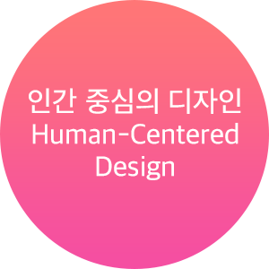
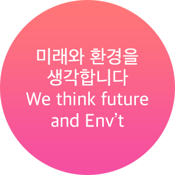
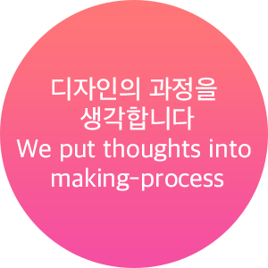

봄의 감성을 담은 디자인을 시작하다 — Spring-scented Design Begins
2016년 봄 세상에 태어난 봄젤리는 세상을 아름답게 만드는 디자인을 퍼뜨리기 위해 세상에 태어났습니다. 인간중심의, 환경을 생각하는, 디자인 과정을 생각하는 디자인을 목표로 작업중입니다.
Bomejelly was born in Spring of 2016 to disperse design that makes the world more beautiful.
We are working onto creating designs that is Human-centered, thinks about environmental impact and has considerations for creating-process.
봄젤리 소개 — Bomejelly Overview
봄젤리는 서울을 기반으로 하는 그래픽 디자인 회사입니다.
봄젤리는 그래픽과 아트워크, 브랜딩과 UX 영역에서 전문성을 가지고 있습니다.
Bomejelly is a graphic design agency based in Seoul. We focus on graphics, artworks, branding, and UX.
봄젤리의 가치 — Our Values
-

인간을 위한 디자인, 사회를 향한 디자인을 지향합니다. 빅터 파파넥의 생각에 공감하며 디자인이 사회와, 사람에게 의미가 있는 무엇인가를 만들어내야 합니다.
-

우리의 고찰(consideration)의 끝에 미래 지향적인 결과물이 있다고 믿습니다. 아울러, 미래세대를 위한 친환경적인 디자인을 지향합니다.
-

시각적인 결과물로 말하지만 과정을 생각합니다. 시각적인 결과물 또는 기대되는 댓가를 위해 무리한 요구를 하지 않습니다.